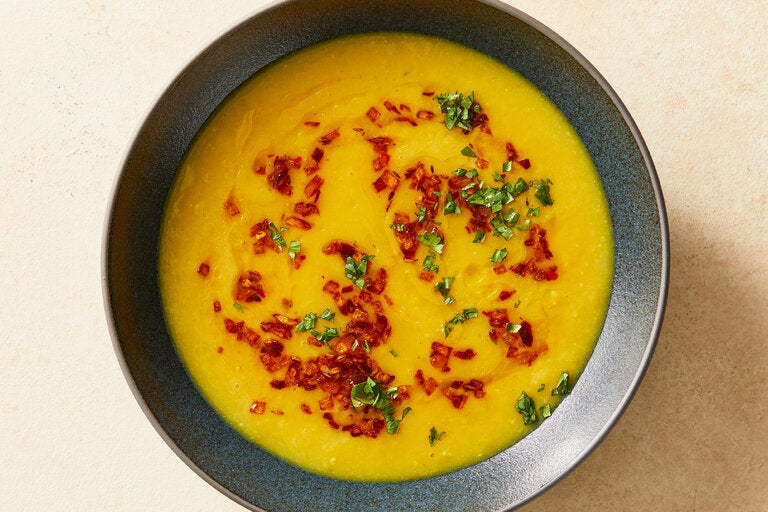

Masala Dal

Description
This recipe, which is adapted from “Classic Indian Cooking” by Julie Sahni (William Morrow, 1980), a treasury of foolproof recipes for home cooks. Masala dal is a staple of Indian cuisine and one that has infinite variations, but the basic technique is to simmer legumes until tender, then finish with a swirl of a tadka, ghee or other fat that's infused with aromatics like onions, cumin seeds and chile. In the original recipe, the dal is boiled on the stovetop, but in this adaptation, the split peas are cooked in the slow cooker, which works beautifully, and has the advantage of making the timing a bit easier, as you can throw the peas into the slow cooker in the morning, and they will hold well until dinnertime. The success of this dish hinges on two key steps: First, be sure to beat the legumes to a creamy purée with a whisk before adding the tadka. Second, cook the onions on a higher heat and until darker in color than you might think: Ms. Sahni calls this technique “brown frying,” and it is not the same as making French caramelized onions, which are cooked lower and slower. As in cooking caramel candy, the last five minutes are critical: Stir the onions constantly and be aware they can burn quickly. Serve dal with basmati rice or Indian flatbreads such as naan.
Ingredients
- 1-1/2 cups yellow split peas, rinsed
- 1/2 teaspoon turmeric
- 1-1/2 teaspoons coarse kosher salt, or more to taste
- 1/2 cup ghe or vegetable oil
- 1 teaspoon cumin seeds
- 1 large yellow onion, finely chopped
- 1/4 teaspoon crushed red pepper, or more to taste
- chopped fresh cilantro, for topping
Directions
- Combine the split peas, turmeric and 4½ cups water in a 6- to 8-quart slow cooker. Cook on high until the peas are tender and easily crushed between your fingers, about 4 hours. (This keeps well on warm for at least four more hours.)
- Add the salt to the peas, then use a whisk to beat the peas vigorously; they should disintegrate fairly easily into a smooth purée.
- In a 12-inch skillet, warm the ghee over medium-high heat until a cumin seed sizzles vigorously as soon as it's dropped in. Add the cumin seeds and let them sizzle for 10 seconds, then add the onion and cook, stirring constantly, until the onion shrinks, shrivels and gets very deeply browned, 10 to 18 minutes. If the onions threaten to blacken, turn down the heat and/or add a spoonful of cold water. Pay special attention to the last 5 minutes or so, after the onions have shriveled and started to brown; stir constantly and let them frizzle and darken, but not blacken. Immediately add the red pepper to the tadka, then pour the onions, spices and all the perfumed ghee into the dal. Swirl loosely. Taste and add more salt and/or crushed red pepper, if you like. Top with cilantro and serve.